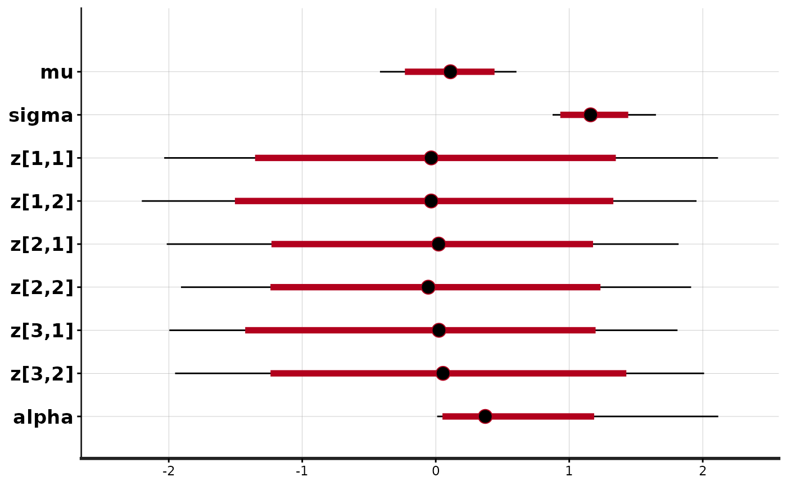

Fit a model with Stan
stan.Rd
Fit a model defined in the Stan modeling language and
return the fitted result as an instance of stanfit.
Usage
stan(file, model_name = "anon_model", model_code = "", fit = NA,
data = list(), pars = NA,
chains = 4, iter = 2000, warmup = floor(iter/2), thin = 1,
init = "random", seed = sample.int(.Machine$integer.max, 1),
algorithm = c("NUTS", "HMC", "Fixed_param"), <!-- %, "Metropolis"), -->
control = NULL, sample_file = NULL, diagnostic_file = NULL,
save_dso = TRUE, verbose = FALSE, include = TRUE,
cores = getOption("mc.cores", 1L),
open_progress = interactive() && !isatty(stdout()) &&
!identical(Sys.getenv("RSTUDIO"), "1"),
...,
boost_lib = NULL, eigen_lib = NULL
)Arguments
- file
The path to the Stan program to use.
fileshould be a character string file name or a connection that R supports containing the text of a model specification in the Stan modeling language.A model may also be specified directly as a character string using the
model_codeargument, but we recommend always putting Stan programs in separate files with a.stanextension.The
stanfunction can also use the Stan program from an existingstanfitobject via thefitargument. Whenfitis specified, thefileargument is ignored.- model_code
A character string either containing the model definition or the name of a character string object in the workspace. This argument is used only if arguments
fileandfitare not specified.- fit
An instance of S4 class
stanfitderived from a previous fit; defaults toNA. Iffitis notNA, the compiled model associated with the fitted result is re-used; thus the time that would otherwise be spent recompiling the C++ code for the model can be saved.- model_name
A string to use as the name of the model; defaults to
"anon_model". However, the model name will be derived fromfileormodel_code(ifmodel_codeis the name of a character string object) ifmodel_nameis not specified. This is not a particularly important argument, although since it affects the name used in printed messages, developers of other packages that use rstan to fit models may want to use informative names.- data
A named
listorenvironmentproviding the data for the model, or a character vector for all the names of objects to use as data. See the Passing data to Stan section below.- pars
A character vector specifying parameters of interest to be saved. The default is to save all parameters from the model. If
include = TRUE, only samples for parameters named inparsare stored in the fitted results. Conversely, ifinclude = FALSE, samples for all parameters except those named inparsare stored in the fitted results.- include
Logical scalar defaulting to
TRUEindicating whether to include or exclude the parameters given by theparsargument. IfFALSE, only entire multidimensional parameters can be excluded, rather than particular elements of them.- iter
A positive integer specifying the number of iterations for each chain (including warmup). The default is 2000.
- warmup
A positive integer specifying the number of warmup (aka burnin) iterations per chain. If step-size adaptation is on (which it is by default), this also controls the number of iterations for which adaptation is run (and hence these warmup samples should not be used for inference). The number of warmup iterations should be smaller than
iterand the default isiter/2.- chains
A positive integer specifying the number of Markov chains. The default is 4.
- cores
The number of cores to use when executing the Markov chains in parallel. The default is to use the value of the
"mc.cores"option if it has been set and otherwise to default to 1 core. However, we recommend setting it to be as many processors as the hardware and RAM allow (up to the number of chains). SeedetectCoresif you don't know this number for your system.- thin
A positive integer specifying the period for saving samples. The default is 1, which is usually the recommended value. Unless your posterior distribution takes up too much memory we do not recommend thinning as it throws away information. The tradition of thinning when running MCMC stems primarily from the use of samplers that require a large number of iterations to achieve the desired effective sample size. Because of the efficiency (effective samples per second) of Hamiltonian Monte Carlo, rarely should this be necessary when using Stan.
- init
Specification of initial values for all or some parameters. Can be the digit
0, the strings"0"or"random", a function that returns a named list, or a list of named lists:init="random"(default):Let Stan generate random initial values for all parameters. The seed of the random number generator used by Stan can be specified via the
seedargument. If the seed for Stan is fixed, the same initial values are used. The default is to randomly generate initial values between-2and2on the unconstrained support. The optional additional parameterinit_rcan be set to some value other than2to change the range of the randomly generated inits.init="0", init=0:Initialize all parameters to zero on the unconstrained support.
- inits via list:
Set inital values by providing a list equal in length to the number of chains. The elements of this list should themselves be named lists, where each of these named lists has the name of a parameter and is used to specify the initial values for that parameter for the corresponding chain.
- inits via function:
Set initial values by providing a function that returns a list for specifying the initial values of parameters for a chain. The function can take an optional parameter
chain_idthrough which thechain_id(if specified) or the integers from 1 tochainswill be supplied to the function for generating initial values. See the Examples section below for examples of defining such functions and using a list of lists for specifying initial values.
When specifying initial values via a
listorfunction, any parameters for which values are not specified will receive initial values generated as described in theinit="random"description above.- seed
The seed for random number generation. The default is generated from 1 to the maximum integer supported by R on the machine. Even if multiple chains are used, only one seed is needed, with other chains having seeds derived from that of the first chain to avoid dependent samples. When a seed is specified by a number,
as.integerwill be applied to it. Ifas.integerproducesNA, the seed is generated randomly. The seed can also be specified as a character string of digits, such as"12345", which is converted to integer.Using R's
set.seedfunction to set the seed for Stan will not work.- algorithm
One of the sampling algorithms that are implemented in Stan. The default and preferred algorithm is
"NUTS", which is the No-U-Turn sampler variant of Hamiltonian Monte Carlo (Hoffman and Gelman 2011, Betancourt 2017). Currently the other options are"HMC"(Hamiltonian Monte Carlo), and"Fixed_param". When"Fixed_param"is used no MCMC sampling is performed (e.g., for simulating with in the generated quantities block).- sample_file
An optional character string providing the name of a file. If specified the draws for all parameters and other saved quantities will be written to the file. If not provided, files are not created. When the folder specified is not writable,
tempdir()is used. When there are multiple chains, an underscore and chain number are appended to the file name.- diagnostic_file
An optional character string providing the name of a file. If specified the diagnostics data for all parameters will be written to the file. If not provided, files are not created. When the folder specified is not writable,
tempdir()is used. When there are multiple chains, an underscore and chain number are appended to the file name.- save_dso
Logical, with default
TRUE, indicating whether the dynamic shared object (DSO) compiled from the C++ code for the model will be saved or not. IfTRUE, we can draw samples from the same model in another R session using the saved DSO (i.e., without compiling the C++ code again). This parameter only takes effect iffitis not used; withfitdefined, the DSO from the previous run is used. Whensave_dso=TRUE, the fitted object can be loaded from what is saved previously and used for sampling, if the compiling is done on the same platform, that is, same operating system and same architecture (32bits or 64bits).- verbose
TRUEorFALSE: flag indicating whether to print intermediate output from Stan on the console, which might be helpful for model debugging.- control
A named
listof parameters to control the sampler's behavior. It defaults toNULLso all the default values are used. First, the following are adaptation parameters for sampling algorithms. These are parameters used in Stan with similar names here.adapt_engaged(logical)adapt_gamma(double, positive, defaults to 0.05)adapt_delta(double, between 0 and 1, defaults to 0.8)adapt_kappa(double, positive, defaults to 0.75)adapt_t0(double, positive, defaults to 10)adapt_init_buffer(integer, positive, defaults to 75)adapt_term_buffer(integer, positive, defaults to 50)adapt_window(integer, positive, defaults to 25)
In addition, algorithm HMC (called 'static HMC' in Stan) and NUTS share the following parameters:
stepsize(double, positive, defaults to 1) Note: this controls the initial stepsize only, unlessadapt_engaged=FALSE.stepsize_jitter(double, [0,1], defaults to 0)metric(string, one of "unit_e", "diag_e", "dense_e", defaults to "diag_e")
For algorithm NUTS, we can also set:
max_treedepth(integer, positive, defaults to 10)
For algorithm HMC, we can also set:
int_time(double, positive)
For
test_gradmode, the following parameters can be set:epsilon(double, defaults to 1e-6)error(double, defaults to 1e-6)
- open_progress
Logical scalar that only takes effect if
cores > 1but is recommended to beTRUEin interactive use so that the progress of the chains will be redirected to a file that is automatically opened for inspection. For very short runs, the user might preferFALSE.- ...
Other optional parameters:
chain_id(integer)init_r(double, positive)test_grad(logical)append_samples(logical)refresh(integer)save_warmup(logical)deprecated:
enable_random_init(logical)
chain_idcan be a vector to specify the chain_id for all chains or an integer. For the former case, they should be unique. For the latter, the sequence of integers starting from the givenchain_idare used for all chains.init_ris used only for generating random initial values, specifically wheninit="random"or not all parameters are initialized in the user-supplied list or function. If specified, the initial values are simulated uniformly from interval [-init_r,init_r] rather than using the default interval (see the manual of (cmd)Stan).test_grad(logical). Iftest_grad=TRUE, Stan will not do any sampling. Instead, the gradient calculation is tested and printed out and the fittedstanfitobject is in test gradient mode. By default, it isFALSE.append_samples(logical). Only relevant ifsample_fileis specified and is an existing file. In that case, settingappend_samples=TRUEwill append the samples to the existing file rather than overwriting the contents of the file.refresh(integer) can be used to control how often the progress of the sampling is reported (i.e. show the progress everyrefreshiterations). By default,refresh = max(iter/10, 1). The progress indicator is turned off ifrefresh <= 0.Deprecated:
enable_random_init(logical) beingTRUEenables specifying initial values randomly when the initial values are not fully specified from the user.save_warmup(logical) indicates whether to save draws during the warmup phase and defaults toTRUE. Some memory related problems can be avoided by setting it toFALSE, but some diagnostics are more limited if the warmup draws are not stored.- boost_lib
The path for an alternative version of the Boost C++ to use instead of the one in the BH package.
- eigen_lib
The path for an alternative version of the Eigen C++ library to the one in RcppEigen.
Details
The stan function does all of the work of fitting a Stan model and
returning the results as an instance of stanfit. The steps are
roughly as follows:
Translate the Stan model to C++ code. (
stanc)Compile the C++ code into a binary shared object, which is loaded into the current R session (an object of S4 class
stanmodelis created). (stan_model)Draw samples and wrap them in an object of S4 class
stanfit. (sampling)
The returned object can be used with methods such as print,
summary, and plot to inspect and retrieve the results of
the fitted model.
stan can also be used to sample again from a fitted model under
different settings (e.g., different iter, data, etc.) by
using the fit argument to specify an existing stanfit object.
In this case, the compiled C++ code for the model is reused.
Value
An object of S4 class stanfit. However, if cores > 1
and there is an error for any of the chains, then the error(s) are printed. If
all chains have errors and an error occurs before or during sampling, the returned
object does not contain samples. But the compiled binary object for the
model is still included, so we can reuse the returned object for another
sampling.
Passing data to Stan
The data passed to stan are preprocessed before being passed to Stan.
If data is not a character vector, the data block of the Stan program
is parsed and R objects of the same name are searched starting from the
calling environment. Then, if data is list-like but not a data.frame
the elements of data take precedence. This behavior is similar to how
a formula is evaluated by the lm function when data is
supplied. In general, each R object being passed to Stan should be either a numeric
vector (including the special case of a 'scalar') or a numeric array (matrix).
The first exception is that an element can be a logical vector: TRUE's
are converted to 1 and FALSE's to 0.
An element can also be a data frame or a specially structured list (see
details below), both of which will be converted into arrays in the
preprocessing. Using a specially structured list is not
encouraged though it might be convenient sometimes; and when in doubt, just
use arrays.
This preprocessing for each element mainly includes the following:
Change the data of type from
doubletointegerif no accuracy is lost. The main reason is that by default, R usesdoubleas data type such as ina <- 3. But Stan will not read data of typeintfromrealand it reads data fromintif the data type is declared asreal.Check if there is
NAin the data. Unlike BUGS, Stan does not allow missing data. AnyNAvalues in supplied data will cause the function to stop and report an error.Check data types. Stan allows only numeric data, that is, doubles, integers, and arrays of these. Data of other types (for example, characters and factors) are not passed to Stan.
Check whether there are objects in the data list with duplicated names. Duplicated names, if found, will cause the function to stop and report an error.
Check whether the names of objects in the data list are legal Stan names. If illegal names are found, it will stop and report an error. See (Cmd)Stan's manual for the rules of variable names.
When an element is of type
data.frame, it will be converted tomatrixby functiondata.matrix.When an element is of type
list, it is supposed to make it easier to pass data for those declared in Stan code such as"vector[J] y1[I]"and"matrix[J,K] y2[I]". Using the latter as an example, we can use a list fory2if the list has "I" elements, each of which is an array (matrix) of dimension "J*K". However, it is not possible to pass a list for data declared such as"vector[K] y3[I,J]"; the only way for it is to use an array with dimension "I*J*K". In addition, technically adata.framein R is also a list, but it should not be used for the purpose here since adata.framewill be converted to a matrix as described above.
Stan treats a vector of length 1 in R as a scalar. So technically
if, for example, "array[1] real y;" is defined in the data block, an array
such as "y = array(1.0, dim = 1)" in R should be used. This
is also the case for specifying initial values since the same
underlying approach for reading data from R in Stan is used, in which
vector of length 1 is treated as a scalar.
In general, the higher the optimization level is set, the faster the generated binary code for the model runs, which can be set in a Makevars file. However, the binary code generated for the model runs fast by using a higher optimization level at the cost of longer times to compile the C++ code.
References
The Stan Development Team Stan Modeling Language User's Guide and Reference Manual. https://mc-stan.org.
The Stan Development Team CmdStan Interface User's Guide. https://mc-stan.org.
See also
The package vignettes for an example of fitting a model and accessing the contents of
stanfitobjects (https://mc-stan.org/rstan/articles/).stancfor translating model code in Stan modeling language to C++,samplingfor sampling, andstanfitfor the fitted results.as.array.stanfitandextractfor extracting samples fromstanfitobjects.
Examples
# \dontrun{
#### example 1
library(rstan)
scode <- "
parameters {
array[2] real y;
}
model {
y[1] ~ normal(0, 1);
y[2] ~ double_exponential(0, 2);
}
"
fit1 <- stan(model_code = scode, iter = 10, verbose = FALSE)
#>
#> SAMPLING FOR MODEL 'anon_model' NOW (CHAIN 1).
#> Chain 1:
#> Chain 1: Gradient evaluation took 2e-06 seconds
#> Chain 1: 1000 transitions using 10 leapfrog steps per transition would take 0.02 seconds.
#> Chain 1: Adjust your expectations accordingly!
#> Chain 1:
#> Chain 1:
#> Chain 1: WARNING: No variance estimation is
#> Chain 1: performed for num_warmup < 20
#> Chain 1:
#> Chain 1: Iteration: 1 / 10 [ 10%] (Warmup)
#> Chain 1: Iteration: 2 / 10 [ 20%] (Warmup)
#> Chain 1: Iteration: 3 / 10 [ 30%] (Warmup)
#> Chain 1: Iteration: 4 / 10 [ 40%] (Warmup)
#> Chain 1: Iteration: 5 / 10 [ 50%] (Warmup)
#> Chain 1: Iteration: 6 / 10 [ 60%] (Sampling)
#> Chain 1: Iteration: 7 / 10 [ 70%] (Sampling)
#> Chain 1: Iteration: 8 / 10 [ 80%] (Sampling)
#> Chain 1: Iteration: 9 / 10 [ 90%] (Sampling)
#> Chain 1: Iteration: 10 / 10 [100%] (Sampling)
#> Chain 1:
#> Chain 1: Elapsed Time: 0 seconds (Warm-up)
#> Chain 1: 0 seconds (Sampling)
#> Chain 1: 0 seconds (Total)
#> Chain 1:
#>
#> SAMPLING FOR MODEL 'anon_model' NOW (CHAIN 2).
#> Chain 2:
#> Chain 2: Gradient evaluation took 3.2e-05 seconds
#> Chain 2: 1000 transitions using 10 leapfrog steps per transition would take 0.32 seconds.
#> Chain 2: Adjust your expectations accordingly!
#> Chain 2:
#> Chain 2:
#> Chain 2: WARNING: No variance estimation is
#> Chain 2: performed for num_warmup < 20
#> Chain 2:
#> Chain 2: Iteration: 1 / 10 [ 10%] (Warmup)
#> Chain 2: Iteration: 2 / 10 [ 20%] (Warmup)
#> Chain 2: Iteration: 3 / 10 [ 30%] (Warmup)
#> Chain 2: Iteration: 4 / 10 [ 40%] (Warmup)
#> Chain 2: Iteration: 5 / 10 [ 50%] (Warmup)
#> Chain 2: Iteration: 6 / 10 [ 60%] (Sampling)
#> Chain 2: Iteration: 7 / 10 [ 70%] (Sampling)
#> Chain 2: Iteration: 8 / 10 [ 80%] (Sampling)
#> Chain 2: Iteration: 9 / 10 [ 90%] (Sampling)
#> Chain 2: Iteration: 10 / 10 [100%] (Sampling)
#> Chain 2:
#> Chain 2: Elapsed Time: 0 seconds (Warm-up)
#> Chain 2: 0 seconds (Sampling)
#> Chain 2: 0 seconds (Total)
#> Chain 2:
#>
#> SAMPLING FOR MODEL 'anon_model' NOW (CHAIN 3).
#> Chain 3:
#> Chain 3: Gradient evaluation took 1e-06 seconds
#> Chain 3: 1000 transitions using 10 leapfrog steps per transition would take 0.01 seconds.
#> Chain 3: Adjust your expectations accordingly!
#> Chain 3:
#> Chain 3:
#> Chain 3: WARNING: No variance estimation is
#> Chain 3: performed for num_warmup < 20
#> Chain 3:
#> Chain 3: Iteration: 1 / 10 [ 10%] (Warmup)
#> Chain 3: Iteration: 2 / 10 [ 20%] (Warmup)
#> Chain 3: Iteration: 3 / 10 [ 30%] (Warmup)
#> Chain 3: Iteration: 4 / 10 [ 40%] (Warmup)
#> Chain 3: Iteration: 5 / 10 [ 50%] (Warmup)
#> Chain 3: Iteration: 6 / 10 [ 60%] (Sampling)
#> Chain 3: Iteration: 7 / 10 [ 70%] (Sampling)
#> Chain 3: Iteration: 8 / 10 [ 80%] (Sampling)
#> Chain 3: Iteration: 9 / 10 [ 90%] (Sampling)
#> Chain 3: Iteration: 10 / 10 [100%] (Sampling)
#> Chain 3:
#> Chain 3: Elapsed Time: 0 seconds (Warm-up)
#> Chain 3: 0 seconds (Sampling)
#> Chain 3: 0 seconds (Total)
#> Chain 3:
#>
#> SAMPLING FOR MODEL 'anon_model' NOW (CHAIN 4).
#> Chain 4:
#> Chain 4: Gradient evaluation took 1e-06 seconds
#> Chain 4: 1000 transitions using 10 leapfrog steps per transition would take 0.01 seconds.
#> Chain 4: Adjust your expectations accordingly!
#> Chain 4:
#> Chain 4:
#> Chain 4: WARNING: No variance estimation is
#> Chain 4: performed for num_warmup < 20
#> Chain 4:
#> Chain 4: Iteration: 1 / 10 [ 10%] (Warmup)
#> Chain 4: Iteration: 2 / 10 [ 20%] (Warmup)
#> Chain 4: Iteration: 3 / 10 [ 30%] (Warmup)
#> Chain 4: Iteration: 4 / 10 [ 40%] (Warmup)
#> Chain 4: Iteration: 5 / 10 [ 50%] (Warmup)
#> Chain 4: Iteration: 6 / 10 [ 60%] (Sampling)
#> Chain 4: Iteration: 7 / 10 [ 70%] (Sampling)
#> Chain 4: Iteration: 8 / 10 [ 80%] (Sampling)
#> Chain 4: Iteration: 9 / 10 [ 90%] (Sampling)
#> Chain 4: Iteration: 10 / 10 [100%] (Sampling)
#> Chain 4:
#> Chain 4: Elapsed Time: 0 seconds (Warm-up)
#> Chain 4: 0 seconds (Sampling)
#> Chain 4: 0 seconds (Total)
#> Chain 4:
#> Warning: The largest R-hat is 1.42, indicating chains have not mixed.
#> Running the chains for more iterations may help. See
#> https://mc-stan.org/misc/warnings.html#r-hat
print(fit1)
#> Inference for Stan model: anon_model.
#> 4 chains, each with iter=10; warmup=5; thin=1;
#> post-warmup draws per chain=5, total post-warmup draws=20.
#>
#> mean se_mean sd 2.5% 25% 50% 75% 97.5% n_eff Rhat
#> y[1] -0.04 0.13 0.68 -1.07 -0.58 0.03 0.46 0.97 26 0.88
#> y[2] 0.86 0.69 2.16 -2.65 -0.64 0.44 2.03 5.00 10 1.38
#> lp__ -1.08 0.16 0.79 -2.78 -1.40 -0.87 -0.47 -0.25 26 0.91
#>
#> Samples were drawn using NUTS(diag_e) at Wed Jul 8 17:18:12 2026.
#> For each parameter, n_eff is a crude measure of effective sample size,
#> and Rhat is the potential scale reduction factor on split chains (at
#> convergence, Rhat=1).
fit2 <- stan(fit = fit1, iter = 10000, verbose = FALSE)
#>
#> SAMPLING FOR MODEL 'anon_model' NOW (CHAIN 1).
#> Chain 1:
#> Chain 1: Gradient evaluation took 3e-06 seconds
#> Chain 1: 1000 transitions using 10 leapfrog steps per transition would take 0.03 seconds.
#> Chain 1: Adjust your expectations accordingly!
#> Chain 1:
#> Chain 1:
#> Chain 1: Iteration: 1 / 10000 [ 0%] (Warmup)
#> Chain 1: Iteration: 1000 / 10000 [ 10%] (Warmup)
#> Chain 1: Iteration: 2000 / 10000 [ 20%] (Warmup)
#> Chain 1: Iteration: 3000 / 10000 [ 30%] (Warmup)
#> Chain 1: Iteration: 4000 / 10000 [ 40%] (Warmup)
#> Chain 1: Iteration: 5000 / 10000 [ 50%] (Warmup)
#> Chain 1: Iteration: 5001 / 10000 [ 50%] (Sampling)
#> Chain 1: Iteration: 6000 / 10000 [ 60%] (Sampling)
#> Chain 1: Iteration: 7000 / 10000 [ 70%] (Sampling)
#> Chain 1: Iteration: 8000 / 10000 [ 80%] (Sampling)
#> Chain 1: Iteration: 9000 / 10000 [ 90%] (Sampling)
#> Chain 1: Iteration: 10000 / 10000 [100%] (Sampling)
#> Chain 1:
#> Chain 1: Elapsed Time: 0.028 seconds (Warm-up)
#> Chain 1: 0.028 seconds (Sampling)
#> Chain 1: 0.056 seconds (Total)
#> Chain 1:
#>
#> SAMPLING FOR MODEL 'anon_model' NOW (CHAIN 2).
#> Chain 2:
#> Chain 2: Gradient evaluation took 1e-06 seconds
#> Chain 2: 1000 transitions using 10 leapfrog steps per transition would take 0.01 seconds.
#> Chain 2: Adjust your expectations accordingly!
#> Chain 2:
#> Chain 2:
#> Chain 2: Iteration: 1 / 10000 [ 0%] (Warmup)
#> Chain 2: Iteration: 1000 / 10000 [ 10%] (Warmup)
#> Chain 2: Iteration: 2000 / 10000 [ 20%] (Warmup)
#> Chain 2: Iteration: 3000 / 10000 [ 30%] (Warmup)
#> Chain 2: Iteration: 4000 / 10000 [ 40%] (Warmup)
#> Chain 2: Iteration: 5000 / 10000 [ 50%] (Warmup)
#> Chain 2: Iteration: 5001 / 10000 [ 50%] (Sampling)
#> Chain 2: Iteration: 6000 / 10000 [ 60%] (Sampling)
#> Chain 2: Iteration: 7000 / 10000 [ 70%] (Sampling)
#> Chain 2: Iteration: 8000 / 10000 [ 80%] (Sampling)
#> Chain 2: Iteration: 9000 / 10000 [ 90%] (Sampling)
#> Chain 2: Iteration: 10000 / 10000 [100%] (Sampling)
#> Chain 2:
#> Chain 2: Elapsed Time: 0.027 seconds (Warm-up)
#> Chain 2: 0.027 seconds (Sampling)
#> Chain 2: 0.054 seconds (Total)
#> Chain 2:
#>
#> SAMPLING FOR MODEL 'anon_model' NOW (CHAIN 3).
#> Chain 3:
#> Chain 3: Gradient evaluation took 1e-06 seconds
#> Chain 3: 1000 transitions using 10 leapfrog steps per transition would take 0.01 seconds.
#> Chain 3: Adjust your expectations accordingly!
#> Chain 3:
#> Chain 3:
#> Chain 3: Iteration: 1 / 10000 [ 0%] (Warmup)
#> Chain 3: Iteration: 1000 / 10000 [ 10%] (Warmup)
#> Chain 3: Iteration: 2000 / 10000 [ 20%] (Warmup)
#> Chain 3: Iteration: 3000 / 10000 [ 30%] (Warmup)
#> Chain 3: Iteration: 4000 / 10000 [ 40%] (Warmup)
#> Chain 3: Iteration: 5000 / 10000 [ 50%] (Warmup)
#> Chain 3: Iteration: 5001 / 10000 [ 50%] (Sampling)
#> Chain 3: Iteration: 6000 / 10000 [ 60%] (Sampling)
#> Chain 3: Iteration: 7000 / 10000 [ 70%] (Sampling)
#> Chain 3: Iteration: 8000 / 10000 [ 80%] (Sampling)
#> Chain 3: Iteration: 9000 / 10000 [ 90%] (Sampling)
#> Chain 3: Iteration: 10000 / 10000 [100%] (Sampling)
#> Chain 3:
#> Chain 3: Elapsed Time: 0.026 seconds (Warm-up)
#> Chain 3: 0.027 seconds (Sampling)
#> Chain 3: 0.053 seconds (Total)
#> Chain 3:
#>
#> SAMPLING FOR MODEL 'anon_model' NOW (CHAIN 4).
#> Chain 4:
#> Chain 4: Gradient evaluation took 1e-06 seconds
#> Chain 4: 1000 transitions using 10 leapfrog steps per transition would take 0.01 seconds.
#> Chain 4: Adjust your expectations accordingly!
#> Chain 4:
#> Chain 4:
#> Chain 4: Iteration: 1 / 10000 [ 0%] (Warmup)
#> Chain 4: Iteration: 1000 / 10000 [ 10%] (Warmup)
#> Chain 4: Iteration: 2000 / 10000 [ 20%] (Warmup)
#> Chain 4: Iteration: 3000 / 10000 [ 30%] (Warmup)
#> Chain 4: Iteration: 4000 / 10000 [ 40%] (Warmup)
#> Chain 4: Iteration: 5000 / 10000 [ 50%] (Warmup)
#> Chain 4: Iteration: 5001 / 10000 [ 50%] (Sampling)
#> Chain 4: Iteration: 6000 / 10000 [ 60%] (Sampling)
#> Chain 4: Iteration: 7000 / 10000 [ 70%] (Sampling)
#> Chain 4: Iteration: 8000 / 10000 [ 80%] (Sampling)
#> Chain 4: Iteration: 9000 / 10000 [ 90%] (Sampling)
#> Chain 4: Iteration: 10000 / 10000 [100%] (Sampling)
#> Chain 4:
#> Chain 4: Elapsed Time: 0.027 seconds (Warm-up)
#> Chain 4: 0.026 seconds (Sampling)
#> Chain 4: 0.053 seconds (Total)
#> Chain 4:
## using as.array on the stanfit object to get samples
a2 <- as.array(fit2)
## extract samples as a list of arrays
e2 <- extract(fit2, permuted = FALSE)
#### example 2
#### the result of this package is included in the package
excode <- '
transformed data {
array[20] real y;
y[1] = 0.5796; y[2] = 0.2276; y[3] = -0.2959;
y[4] = -0.3742; y[5] = 0.3885; y[6] = -2.1585;
y[7] = 0.7111; y[8] = 1.4424; y[9] = 2.5430;
y[10] = 0.3746; y[11] = 0.4773; y[12] = 0.1803;
y[13] = 0.5215; y[14] = -1.6044; y[15] = -0.6703;
y[16] = 0.9459; y[17] = -0.382; y[18] = 0.7619;
y[19] = 0.1006; y[20] = -1.7461;
}
parameters {
real mu;
real<lower=0, upper=10> sigma;
array[3] vector[2] z;
real<lower=0> alpha;
}
model {
y ~ normal(mu, sigma);
for (i in 1:3)
z[i] ~ normal(0, 1);
alpha ~ exponential(2);
}
'
exfit <- stan(model_code = excode, save_dso = FALSE, iter = 500)
#>
#> SAMPLING FOR MODEL 'anon_model' NOW (CHAIN 1).
#> Chain 1:
#> Chain 1: Gradient evaluation took 9e-06 seconds
#> Chain 1: 1000 transitions using 10 leapfrog steps per transition would take 0.09 seconds.
#> Chain 1: Adjust your expectations accordingly!
#> Chain 1:
#> Chain 1:
#> Chain 1: Iteration: 1 / 500 [ 0%] (Warmup)
#> Chain 1: Iteration: 50 / 500 [ 10%] (Warmup)
#> Chain 1: Iteration: 100 / 500 [ 20%] (Warmup)
#> Chain 1: Iteration: 150 / 500 [ 30%] (Warmup)
#> Chain 1: Iteration: 200 / 500 [ 40%] (Warmup)
#> Chain 1: Iteration: 250 / 500 [ 50%] (Warmup)
#> Chain 1: Iteration: 251 / 500 [ 50%] (Sampling)
#> Chain 1: Iteration: 300 / 500 [ 60%] (Sampling)
#> Chain 1: Iteration: 350 / 500 [ 70%] (Sampling)
#> Chain 1: Iteration: 400 / 500 [ 80%] (Sampling)
#> Chain 1: Iteration: 450 / 500 [ 90%] (Sampling)
#> Chain 1: Iteration: 500 / 500 [100%] (Sampling)
#> Chain 1:
#> Chain 1: Elapsed Time: 0.007 seconds (Warm-up)
#> Chain 1: 0.003 seconds (Sampling)
#> Chain 1: 0.01 seconds (Total)
#> Chain 1:
#>
#> SAMPLING FOR MODEL 'anon_model' NOW (CHAIN 2).
#> Chain 2:
#> Chain 2: Gradient evaluation took 3e-06 seconds
#> Chain 2: 1000 transitions using 10 leapfrog steps per transition would take 0.03 seconds.
#> Chain 2: Adjust your expectations accordingly!
#> Chain 2:
#> Chain 2:
#> Chain 2: Iteration: 1 / 500 [ 0%] (Warmup)
#> Chain 2: Iteration: 50 / 500 [ 10%] (Warmup)
#> Chain 2: Iteration: 100 / 500 [ 20%] (Warmup)
#> Chain 2: Iteration: 150 / 500 [ 30%] (Warmup)
#> Chain 2: Iteration: 200 / 500 [ 40%] (Warmup)
#> Chain 2: Iteration: 250 / 500 [ 50%] (Warmup)
#> Chain 2: Iteration: 251 / 500 [ 50%] (Sampling)
#> Chain 2: Iteration: 300 / 500 [ 60%] (Sampling)
#> Chain 2: Iteration: 350 / 500 [ 70%] (Sampling)
#> Chain 2: Iteration: 400 / 500 [ 80%] (Sampling)
#> Chain 2: Iteration: 450 / 500 [ 90%] (Sampling)
#> Chain 2: Iteration: 500 / 500 [100%] (Sampling)
#> Chain 2:
#> Chain 2: Elapsed Time: 0.008 seconds (Warm-up)
#> Chain 2: 0.003 seconds (Sampling)
#> Chain 2: 0.011 seconds (Total)
#> Chain 2:
#>
#> SAMPLING FOR MODEL 'anon_model' NOW (CHAIN 3).
#> Chain 3:
#> Chain 3: Gradient evaluation took 3e-06 seconds
#> Chain 3: 1000 transitions using 10 leapfrog steps per transition would take 0.03 seconds.
#> Chain 3: Adjust your expectations accordingly!
#> Chain 3:
#> Chain 3:
#> Chain 3: Iteration: 1 / 500 [ 0%] (Warmup)
#> Chain 3: Iteration: 50 / 500 [ 10%] (Warmup)
#> Chain 3: Iteration: 100 / 500 [ 20%] (Warmup)
#> Chain 3: Iteration: 150 / 500 [ 30%] (Warmup)
#> Chain 3: Iteration: 200 / 500 [ 40%] (Warmup)
#> Chain 3: Iteration: 250 / 500 [ 50%] (Warmup)
#> Chain 3: Iteration: 251 / 500 [ 50%] (Sampling)
#> Chain 3: Iteration: 300 / 500 [ 60%] (Sampling)
#> Chain 3: Iteration: 350 / 500 [ 70%] (Sampling)
#> Chain 3: Iteration: 400 / 500 [ 80%] (Sampling)
#> Chain 3: Iteration: 450 / 500 [ 90%] (Sampling)
#> Chain 3: Iteration: 500 / 500 [100%] (Sampling)
#> Chain 3:
#> Chain 3: Elapsed Time: 0.008 seconds (Warm-up)
#> Chain 3: 0.003 seconds (Sampling)
#> Chain 3: 0.011 seconds (Total)
#> Chain 3:
#>
#> SAMPLING FOR MODEL 'anon_model' NOW (CHAIN 4).
#> Chain 4:
#> Chain 4: Gradient evaluation took 3e-06 seconds
#> Chain 4: 1000 transitions using 10 leapfrog steps per transition would take 0.03 seconds.
#> Chain 4: Adjust your expectations accordingly!
#> Chain 4:
#> Chain 4:
#> Chain 4: Iteration: 1 / 500 [ 0%] (Warmup)
#> Chain 4: Iteration: 50 / 500 [ 10%] (Warmup)
#> Chain 4: Iteration: 100 / 500 [ 20%] (Warmup)
#> Chain 4: Iteration: 150 / 500 [ 30%] (Warmup)
#> Chain 4: Iteration: 200 / 500 [ 40%] (Warmup)
#> Chain 4: Iteration: 250 / 500 [ 50%] (Warmup)
#> Chain 4: Iteration: 251 / 500 [ 50%] (Sampling)
#> Chain 4: Iteration: 300 / 500 [ 60%] (Sampling)
#> Chain 4: Iteration: 350 / 500 [ 70%] (Sampling)
#> Chain 4: Iteration: 400 / 500 [ 80%] (Sampling)
#> Chain 4: Iteration: 450 / 500 [ 90%] (Sampling)
#> Chain 4: Iteration: 500 / 500 [100%] (Sampling)
#> Chain 4:
#> Chain 4: Elapsed Time: 0.008 seconds (Warm-up)
#> Chain 4: 0.004 seconds (Sampling)
#> Chain 4: 0.012 seconds (Total)
#> Chain 4:
print(exfit)
#> Inference for Stan model: anon_model.
#> 4 chains, each with iter=500; warmup=250; thin=1;
#> post-warmup draws per chain=250, total post-warmup draws=1000.
#>
#> mean se_mean sd 2.5% 25% 50% 75% 97.5% n_eff Rhat
#> mu 0.10 0.01 0.27 -0.42 -0.08 0.11 0.29 0.60 1177 1.00
#> sigma 1.18 0.01 0.21 0.88 1.02 1.16 1.30 1.65 778 1.01
#> z[1,1] 0.00 0.02 1.04 -2.03 -0.70 -0.03 0.69 2.11 1813 1.00
#> z[1,2] -0.06 0.03 1.06 -2.20 -0.74 -0.03 0.66 1.95 1442 1.00
#> z[2,1] -0.02 0.02 0.98 -2.01 -0.71 0.02 0.62 1.82 1672 1.00
#> z[2,2] -0.03 0.02 0.98 -1.91 -0.72 -0.06 0.61 1.91 1967 1.00
#> z[3,1] -0.04 0.02 1.01 -1.99 -0.70 0.03 0.63 1.87 1912 1.00
#> z[3,2] 0.05 0.03 1.02 -1.95 -0.60 0.05 0.72 2.02 1209 1.00
#> alpha 0.53 0.01 0.55 0.01 0.15 0.37 0.72 2.11 1528 1.00
#> lp__ -17.74 0.10 2.22 -22.81 -19.13 -17.39 -16.13 -14.54 456 1.00
#>
#> Samples were drawn using NUTS(diag_e) at Wed Jul 8 17:19:04 2026.
#> For each parameter, n_eff is a crude measure of effective sample size,
#> and Rhat is the potential scale reduction factor on split chains (at
#> convergence, Rhat=1).
plot(exfit)
#> ci_level: 0.8 (80% intervals)
#> outer_level: 0.95 (95% intervals)

# }
# \dontrun{
## examples of specify argument `init` for function stan
## define a function to generate initial values that can
## be fed to function stan's argument `init`
# function form 1 without arguments
initf1 <- function() {
list(mu = 1, sigma = 4, z = array(rnorm(6), dim = c(3,2)), alpha = 1)
}
# function form 2 with an argument named `chain_id`
initf2 <- function(chain_id = 1) {
# cat("chain_id =", chain_id, "\n")
list(mu = 1, sigma = 4, z = array(rnorm(6), dim = c(3,2)), alpha = chain_id)
}
# generate a list of lists to specify initial values
n_chains <- 4
init_ll <- lapply(1:n_chains, function(id) initf2(chain_id = id))
exfit0 <- stan(model_code = excode, init = initf1)
#>
#> SAMPLING FOR MODEL 'anon_model' NOW (CHAIN 1).
#> Chain 1:
#> Chain 1: Gradient evaluation took 6e-06 seconds
#> Chain 1: 1000 transitions using 10 leapfrog steps per transition would take 0.06 seconds.
#> Chain 1: Adjust your expectations accordingly!
#> Chain 1:
#> Chain 1:
#> Chain 1: Iteration: 1 / 2000 [ 0%] (Warmup)
#> Chain 1: Iteration: 200 / 2000 [ 10%] (Warmup)
#> Chain 1: Iteration: 400 / 2000 [ 20%] (Warmup)
#> Chain 1: Iteration: 600 / 2000 [ 30%] (Warmup)
#> Chain 1: Iteration: 800 / 2000 [ 40%] (Warmup)
#> Chain 1: Iteration: 1000 / 2000 [ 50%] (Warmup)
#> Chain 1: Iteration: 1001 / 2000 [ 50%] (Sampling)
#> Chain 1: Iteration: 1200 / 2000 [ 60%] (Sampling)
#> Chain 1: Iteration: 1400 / 2000 [ 70%] (Sampling)
#> Chain 1: Iteration: 1600 / 2000 [ 80%] (Sampling)
#> Chain 1: Iteration: 1800 / 2000 [ 90%] (Sampling)
#> Chain 1: Iteration: 2000 / 2000 [100%] (Sampling)
#> Chain 1:
#> Chain 1: Elapsed Time: 0.019 seconds (Warm-up)
#> Chain 1: 0.015 seconds (Sampling)
#> Chain 1: 0.034 seconds (Total)
#> Chain 1:
#>
#> SAMPLING FOR MODEL 'anon_model' NOW (CHAIN 2).
#> Chain 2:
#> Chain 2: Gradient evaluation took 2e-06 seconds
#> Chain 2: 1000 transitions using 10 leapfrog steps per transition would take 0.02 seconds.
#> Chain 2: Adjust your expectations accordingly!
#> Chain 2:
#> Chain 2:
#> Chain 2: Iteration: 1 / 2000 [ 0%] (Warmup)
#> Chain 2: Iteration: 200 / 2000 [ 10%] (Warmup)
#> Chain 2: Iteration: 400 / 2000 [ 20%] (Warmup)
#> Chain 2: Iteration: 600 / 2000 [ 30%] (Warmup)
#> Chain 2: Iteration: 800 / 2000 [ 40%] (Warmup)
#> Chain 2: Iteration: 1000 / 2000 [ 50%] (Warmup)
#> Chain 2: Iteration: 1001 / 2000 [ 50%] (Sampling)
#> Chain 2: Iteration: 1200 / 2000 [ 60%] (Sampling)
#> Chain 2: Iteration: 1400 / 2000 [ 70%] (Sampling)
#> Chain 2: Iteration: 1600 / 2000 [ 80%] (Sampling)
#> Chain 2: Iteration: 1800 / 2000 [ 90%] (Sampling)
#> Chain 2: Iteration: 2000 / 2000 [100%] (Sampling)
#> Chain 2:
#> Chain 2: Elapsed Time: 0.019 seconds (Warm-up)
#> Chain 2: 0.015 seconds (Sampling)
#> Chain 2: 0.034 seconds (Total)
#> Chain 2:
#>
#> SAMPLING FOR MODEL 'anon_model' NOW (CHAIN 3).
#> Chain 3:
#> Chain 3: Gradient evaluation took 3e-06 seconds
#> Chain 3: 1000 transitions using 10 leapfrog steps per transition would take 0.03 seconds.
#> Chain 3: Adjust your expectations accordingly!
#> Chain 3:
#> Chain 3:
#> Chain 3: Iteration: 1 / 2000 [ 0%] (Warmup)
#> Chain 3: Iteration: 200 / 2000 [ 10%] (Warmup)
#> Chain 3: Iteration: 400 / 2000 [ 20%] (Warmup)
#> Chain 3: Iteration: 600 / 2000 [ 30%] (Warmup)
#> Chain 3: Iteration: 800 / 2000 [ 40%] (Warmup)
#> Chain 3: Iteration: 1000 / 2000 [ 50%] (Warmup)
#> Chain 3: Iteration: 1001 / 2000 [ 50%] (Sampling)
#> Chain 3: Iteration: 1200 / 2000 [ 60%] (Sampling)
#> Chain 3: Iteration: 1400 / 2000 [ 70%] (Sampling)
#> Chain 3: Iteration: 1600 / 2000 [ 80%] (Sampling)
#> Chain 3: Iteration: 1800 / 2000 [ 90%] (Sampling)
#> Chain 3: Iteration: 2000 / 2000 [100%] (Sampling)
#> Chain 3:
#> Chain 3: Elapsed Time: 0.019 seconds (Warm-up)
#> Chain 3: 0.015 seconds (Sampling)
#> Chain 3: 0.034 seconds (Total)
#> Chain 3:
#>
#> SAMPLING FOR MODEL 'anon_model' NOW (CHAIN 4).
#> Chain 4:
#> Chain 4: Gradient evaluation took 3e-06 seconds
#> Chain 4: 1000 transitions using 10 leapfrog steps per transition would take 0.03 seconds.
#> Chain 4: Adjust your expectations accordingly!
#> Chain 4:
#> Chain 4:
#> Chain 4: Iteration: 1 / 2000 [ 0%] (Warmup)
#> Chain 4: Iteration: 200 / 2000 [ 10%] (Warmup)
#> Chain 4: Iteration: 400 / 2000 [ 20%] (Warmup)
#> Chain 4: Iteration: 600 / 2000 [ 30%] (Warmup)
#> Chain 4: Iteration: 800 / 2000 [ 40%] (Warmup)
#> Chain 4: Iteration: 1000 / 2000 [ 50%] (Warmup)
#> Chain 4: Iteration: 1001 / 2000 [ 50%] (Sampling)
#> Chain 4: Iteration: 1200 / 2000 [ 60%] (Sampling)
#> Chain 4: Iteration: 1400 / 2000 [ 70%] (Sampling)
#> Chain 4: Iteration: 1600 / 2000 [ 80%] (Sampling)
#> Chain 4: Iteration: 1800 / 2000 [ 90%] (Sampling)
#> Chain 4: Iteration: 2000 / 2000 [100%] (Sampling)
#> Chain 4:
#> Chain 4: Elapsed Time: 0.019 seconds (Warm-up)
#> Chain 4: 0.015 seconds (Sampling)
#> Chain 4: 0.034 seconds (Total)
#> Chain 4:
stan(fit = exfit0, init = initf2)
#>
#> SAMPLING FOR MODEL 'anon_model' NOW (CHAIN 1).
#> Chain 1:
#> Chain 1: Gradient evaluation took 6e-06 seconds
#> Chain 1: 1000 transitions using 10 leapfrog steps per transition would take 0.06 seconds.
#> Chain 1: Adjust your expectations accordingly!
#> Chain 1:
#> Chain 1:
#> Chain 1: Iteration: 1 / 2000 [ 0%] (Warmup)
#> Chain 1: Iteration: 200 / 2000 [ 10%] (Warmup)
#> Chain 1: Iteration: 400 / 2000 [ 20%] (Warmup)
#> Chain 1: Iteration: 600 / 2000 [ 30%] (Warmup)
#> Chain 1: Iteration: 800 / 2000 [ 40%] (Warmup)
#> Chain 1: Iteration: 1000 / 2000 [ 50%] (Warmup)
#> Chain 1: Iteration: 1001 / 2000 [ 50%] (Sampling)
#> Chain 1: Iteration: 1200 / 2000 [ 60%] (Sampling)
#> Chain 1: Iteration: 1400 / 2000 [ 70%] (Sampling)
#> Chain 1: Iteration: 1600 / 2000 [ 80%] (Sampling)
#> Chain 1: Iteration: 1800 / 2000 [ 90%] (Sampling)
#> Chain 1: Iteration: 2000 / 2000 [100%] (Sampling)
#> Chain 1:
#> Chain 1: Elapsed Time: 0.019 seconds (Warm-up)
#> Chain 1: 0.015 seconds (Sampling)
#> Chain 1: 0.034 seconds (Total)
#> Chain 1:
#>
#> SAMPLING FOR MODEL 'anon_model' NOW (CHAIN 2).
#> Chain 2:
#> Chain 2: Gradient evaluation took 3e-06 seconds
#> Chain 2: 1000 transitions using 10 leapfrog steps per transition would take 0.03 seconds.
#> Chain 2: Adjust your expectations accordingly!
#> Chain 2:
#> Chain 2:
#> Chain 2: Iteration: 1 / 2000 [ 0%] (Warmup)
#> Chain 2: Iteration: 200 / 2000 [ 10%] (Warmup)
#> Chain 2: Iteration: 400 / 2000 [ 20%] (Warmup)
#> Chain 2: Iteration: 600 / 2000 [ 30%] (Warmup)
#> Chain 2: Iteration: 800 / 2000 [ 40%] (Warmup)
#> Chain 2: Iteration: 1000 / 2000 [ 50%] (Warmup)
#> Chain 2: Iteration: 1001 / 2000 [ 50%] (Sampling)
#> Chain 2: Iteration: 1200 / 2000 [ 60%] (Sampling)
#> Chain 2: Iteration: 1400 / 2000 [ 70%] (Sampling)
#> Chain 2: Iteration: 1600 / 2000 [ 80%] (Sampling)
#> Chain 2: Iteration: 1800 / 2000 [ 90%] (Sampling)
#> Chain 2: Iteration: 2000 / 2000 [100%] (Sampling)
#> Chain 2:
#> Chain 2: Elapsed Time: 0.019 seconds (Warm-up)
#> Chain 2: 0.02 seconds (Sampling)
#> Chain 2: 0.039 seconds (Total)
#> Chain 2:
#>
#> SAMPLING FOR MODEL 'anon_model' NOW (CHAIN 3).
#> Chain 3:
#> Chain 3: Gradient evaluation took 3e-06 seconds
#> Chain 3: 1000 transitions using 10 leapfrog steps per transition would take 0.03 seconds.
#> Chain 3: Adjust your expectations accordingly!
#> Chain 3:
#> Chain 3:
#> Chain 3: Iteration: 1 / 2000 [ 0%] (Warmup)
#> Chain 3: Iteration: 200 / 2000 [ 10%] (Warmup)
#> Chain 3: Iteration: 400 / 2000 [ 20%] (Warmup)
#> Chain 3: Iteration: 600 / 2000 [ 30%] (Warmup)
#> Chain 3: Iteration: 800 / 2000 [ 40%] (Warmup)
#> Chain 3: Iteration: 1000 / 2000 [ 50%] (Warmup)
#> Chain 3: Iteration: 1001 / 2000 [ 50%] (Sampling)
#> Chain 3: Iteration: 1200 / 2000 [ 60%] (Sampling)
#> Chain 3: Iteration: 1400 / 2000 [ 70%] (Sampling)
#> Chain 3: Iteration: 1600 / 2000 [ 80%] (Sampling)
#> Chain 3: Iteration: 1800 / 2000 [ 90%] (Sampling)
#> Chain 3: Iteration: 2000 / 2000 [100%] (Sampling)
#> Chain 3:
#> Chain 3: Elapsed Time: 0.02 seconds (Warm-up)
#> Chain 3: 0.015 seconds (Sampling)
#> Chain 3: 0.035 seconds (Total)
#> Chain 3:
#>
#> SAMPLING FOR MODEL 'anon_model' NOW (CHAIN 4).
#> Chain 4:
#> Chain 4: Gradient evaluation took 3e-06 seconds
#> Chain 4: 1000 transitions using 10 leapfrog steps per transition would take 0.03 seconds.
#> Chain 4: Adjust your expectations accordingly!
#> Chain 4:
#> Chain 4:
#> Chain 4: Iteration: 1 / 2000 [ 0%] (Warmup)
#> Chain 4: Iteration: 200 / 2000 [ 10%] (Warmup)
#> Chain 4: Iteration: 400 / 2000 [ 20%] (Warmup)
#> Chain 4: Iteration: 600 / 2000 [ 30%] (Warmup)
#> Chain 4: Iteration: 800 / 2000 [ 40%] (Warmup)
#> Chain 4: Iteration: 1000 / 2000 [ 50%] (Warmup)
#> Chain 4: Iteration: 1001 / 2000 [ 50%] (Sampling)
#> Chain 4: Iteration: 1200 / 2000 [ 60%] (Sampling)
#> Chain 4: Iteration: 1400 / 2000 [ 70%] (Sampling)
#> Chain 4: Iteration: 1600 / 2000 [ 80%] (Sampling)
#> Chain 4: Iteration: 1800 / 2000 [ 90%] (Sampling)
#> Chain 4: Iteration: 2000 / 2000 [100%] (Sampling)
#> Chain 4:
#> Chain 4: Elapsed Time: 0.019 seconds (Warm-up)
#> Chain 4: 0.015 seconds (Sampling)
#> Chain 4: 0.034 seconds (Total)
#> Chain 4:
#> Inference for Stan model: anon_model.
#> 4 chains, each with iter=2000; warmup=1000; thin=1;
#> post-warmup draws per chain=1000, total post-warmup draws=4000.
#>
#> mean se_mean sd 2.5% 25% 50% 75% 97.5% n_eff Rhat
#> mu 0.10 0.00 0.27 -0.44 -0.08 0.10 0.27 0.63 5288 1
#> sigma 1.17 0.00 0.21 0.84 1.02 1.14 1.29 1.65 4850 1
#> z[1,1] -0.03 0.01 1.00 -2.00 -0.70 -0.02 0.63 1.91 6110 1
#> z[1,2] -0.01 0.01 1.02 -2.06 -0.67 -0.02 0.68 1.95 7259 1
#> z[2,1] 0.02 0.01 1.01 -1.95 -0.65 0.02 0.70 1.99 6794 1
#> z[2,2] 0.01 0.01 1.02 -2.02 -0.67 0.00 0.69 2.04 5716 1
#> z[3,1] 0.00 0.01 0.99 -1.93 -0.66 -0.01 0.68 1.93 5651 1
#> z[3,2] 0.02 0.01 1.01 -1.98 -0.65 0.02 0.67 2.06 7182 1
#> alpha 0.50 0.01 0.50 0.01 0.14 0.35 0.71 1.86 5178 1
#> lp__ -17.69 0.05 2.19 -22.82 -18.90 -17.38 -16.10 -14.43 1652 1
#>
#> Samples were drawn using NUTS(diag_e) at Wed Jul 8 17:19:59 2026.
#> For each parameter, n_eff is a crude measure of effective sample size,
#> and Rhat is the potential scale reduction factor on split chains (at
#> convergence, Rhat=1).
stan(fit = exfit0, init = init_ll, chains = n_chains)
#>
#> SAMPLING FOR MODEL 'anon_model' NOW (CHAIN 1).
#> Chain 1:
#> Chain 1: Gradient evaluation took 7e-06 seconds
#> Chain 1: 1000 transitions using 10 leapfrog steps per transition would take 0.07 seconds.
#> Chain 1: Adjust your expectations accordingly!
#> Chain 1:
#> Chain 1:
#> Chain 1: Iteration: 1 / 2000 [ 0%] (Warmup)
#> Chain 1: Iteration: 200 / 2000 [ 10%] (Warmup)
#> Chain 1: Iteration: 400 / 2000 [ 20%] (Warmup)
#> Chain 1: Iteration: 600 / 2000 [ 30%] (Warmup)
#> Chain 1: Iteration: 800 / 2000 [ 40%] (Warmup)
#> Chain 1: Iteration: 1000 / 2000 [ 50%] (Warmup)
#> Chain 1: Iteration: 1001 / 2000 [ 50%] (Sampling)
#> Chain 1: Iteration: 1200 / 2000 [ 60%] (Sampling)
#> Chain 1: Iteration: 1400 / 2000 [ 70%] (Sampling)
#> Chain 1: Iteration: 1600 / 2000 [ 80%] (Sampling)
#> Chain 1: Iteration: 1800 / 2000 [ 90%] (Sampling)
#> Chain 1: Iteration: 2000 / 2000 [100%] (Sampling)
#> Chain 1:
#> Chain 1: Elapsed Time: 0.02 seconds (Warm-up)
#> Chain 1: 0.015 seconds (Sampling)
#> Chain 1: 0.035 seconds (Total)
#> Chain 1:
#>
#> SAMPLING FOR MODEL 'anon_model' NOW (CHAIN 2).
#> Chain 2:
#> Chain 2: Gradient evaluation took 3e-06 seconds
#> Chain 2: 1000 transitions using 10 leapfrog steps per transition would take 0.03 seconds.
#> Chain 2: Adjust your expectations accordingly!
#> Chain 2:
#> Chain 2:
#> Chain 2: Iteration: 1 / 2000 [ 0%] (Warmup)
#> Chain 2: Iteration: 200 / 2000 [ 10%] (Warmup)
#> Chain 2: Iteration: 400 / 2000 [ 20%] (Warmup)
#> Chain 2: Iteration: 600 / 2000 [ 30%] (Warmup)
#> Chain 2: Iteration: 800 / 2000 [ 40%] (Warmup)
#> Chain 2: Iteration: 1000 / 2000 [ 50%] (Warmup)
#> Chain 2: Iteration: 1001 / 2000 [ 50%] (Sampling)
#> Chain 2: Iteration: 1200 / 2000 [ 60%] (Sampling)
#> Chain 2: Iteration: 1400 / 2000 [ 70%] (Sampling)
#> Chain 2: Iteration: 1600 / 2000 [ 80%] (Sampling)
#> Chain 2: Iteration: 1800 / 2000 [ 90%] (Sampling)
#> Chain 2: Iteration: 2000 / 2000 [100%] (Sampling)
#> Chain 2:
#> Chain 2: Elapsed Time: 0.019 seconds (Warm-up)
#> Chain 2: 0.015 seconds (Sampling)
#> Chain 2: 0.034 seconds (Total)
#> Chain 2:
#>
#> SAMPLING FOR MODEL 'anon_model' NOW (CHAIN 3).
#> Chain 3:
#> Chain 3: Gradient evaluation took 3e-06 seconds
#> Chain 3: 1000 transitions using 10 leapfrog steps per transition would take 0.03 seconds.
#> Chain 3: Adjust your expectations accordingly!
#> Chain 3:
#> Chain 3:
#> Chain 3: Iteration: 1 / 2000 [ 0%] (Warmup)
#> Chain 3: Iteration: 200 / 2000 [ 10%] (Warmup)
#> Chain 3: Iteration: 400 / 2000 [ 20%] (Warmup)
#> Chain 3: Iteration: 600 / 2000 [ 30%] (Warmup)
#> Chain 3: Iteration: 800 / 2000 [ 40%] (Warmup)
#> Chain 3: Iteration: 1000 / 2000 [ 50%] (Warmup)
#> Chain 3: Iteration: 1001 / 2000 [ 50%] (Sampling)
#> Chain 3: Iteration: 1200 / 2000 [ 60%] (Sampling)
#> Chain 3: Iteration: 1400 / 2000 [ 70%] (Sampling)
#> Chain 3: Iteration: 1600 / 2000 [ 80%] (Sampling)
#> Chain 3: Iteration: 1800 / 2000 [ 90%] (Sampling)
#> Chain 3: Iteration: 2000 / 2000 [100%] (Sampling)
#> Chain 3:
#> Chain 3: Elapsed Time: 0.019 seconds (Warm-up)
#> Chain 3: 0.015 seconds (Sampling)
#> Chain 3: 0.034 seconds (Total)
#> Chain 3:
#>
#> SAMPLING FOR MODEL 'anon_model' NOW (CHAIN 4).
#> Chain 4:
#> Chain 4: Gradient evaluation took 3e-06 seconds
#> Chain 4: 1000 transitions using 10 leapfrog steps per transition would take 0.03 seconds.
#> Chain 4: Adjust your expectations accordingly!
#> Chain 4:
#> Chain 4:
#> Chain 4: Iteration: 1 / 2000 [ 0%] (Warmup)
#> Chain 4: Iteration: 200 / 2000 [ 10%] (Warmup)
#> Chain 4: Iteration: 400 / 2000 [ 20%] (Warmup)
#> Chain 4: Iteration: 600 / 2000 [ 30%] (Warmup)
#> Chain 4: Iteration: 800 / 2000 [ 40%] (Warmup)
#> Chain 4: Iteration: 1000 / 2000 [ 50%] (Warmup)
#> Chain 4: Iteration: 1001 / 2000 [ 50%] (Sampling)
#> Chain 4: Iteration: 1200 / 2000 [ 60%] (Sampling)
#> Chain 4: Iteration: 1400 / 2000 [ 70%] (Sampling)
#> Chain 4: Iteration: 1600 / 2000 [ 80%] (Sampling)
#> Chain 4: Iteration: 1800 / 2000 [ 90%] (Sampling)
#> Chain 4: Iteration: 2000 / 2000 [100%] (Sampling)
#> Chain 4:
#> Chain 4: Elapsed Time: 0.019 seconds (Warm-up)
#> Chain 4: 0.014 seconds (Sampling)
#> Chain 4: 0.033 seconds (Total)
#> Chain 4:
#> Inference for Stan model: anon_model.
#> 4 chains, each with iter=2000; warmup=1000; thin=1;
#> post-warmup draws per chain=1000, total post-warmup draws=4000.
#>
#> mean se_mean sd 2.5% 25% 50% 75% 97.5% n_eff Rhat
#> mu 0.11 0.00 0.26 -0.41 -0.06 0.11 0.28 0.63 4800 1
#> sigma 1.17 0.00 0.20 0.86 1.03 1.15 1.28 1.62 4923 1
#> z[1,1] 0.00 0.01 1.01 -1.95 -0.68 0.01 0.66 1.95 7217 1
#> z[1,2] -0.01 0.01 1.00 -1.98 -0.69 -0.01 0.69 1.88 7020 1
#> z[2,1] 0.00 0.01 0.99 -2.01 -0.63 0.00 0.66 2.00 6458 1
#> z[2,2] -0.01 0.01 1.01 -2.01 -0.69 -0.01 0.68 1.93 6988 1
#> z[3,1] 0.01 0.01 1.01 -1.95 -0.68 -0.01 0.71 2.00 6168 1
#> z[3,2] 0.00 0.01 1.00 -1.94 -0.68 -0.01 0.67 1.98 6646 1
#> alpha 0.49 0.01 0.48 0.02 0.14 0.34 0.68 1.73 5514 1
#> lp__ -17.56 0.05 2.17 -22.75 -18.77 -17.18 -15.97 -14.38 1709 1
#>
#> Samples were drawn using NUTS(diag_e) at Wed Jul 8 17:20:00 2026.
#> For each parameter, n_eff is a crude measure of effective sample size,
#> and Rhat is the potential scale reduction factor on split chains (at
#> convergence, Rhat=1).
# }